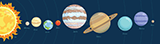
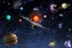

Located at the centre of the solar system and influencing the motion of all the other bodies through its gravitational force is the Sun, which in itself contains more than 99 percent of the mass of the system. The planets, in order of their distance outward from the Sun, are Mercury, Venus, Earth, Mars, Jupiter, Saturn, Uranus, and Neptune. Four planets—Jupiter through Neptune—have ring systems, and all but Mercury and Venus have one or more moons. Pluto had been officially listed among the planets since it was discovered in 1930 orbiting beyond Neptune, but in 1992 an icy object was discovered still farther from the Sun than Pluto. Many other such discoveries followed, including an object named Eris that appears to be at least as large as Pluto. It became apparent that Pluto was simply one of the larger members of this new group of objects, collectively known as the Kuiper belt. Accordingly, in August 2006 the International Astronomical Union (IAU), the organization charged by the scientific community with classifying astronomical objects, voted to revoke Pluto’s planetary status and place it under a new classification called dwarf planet. For a discussion of that action and of the definition of planet approved by the IAU, see planet.
| Name | Mars (1024kg) |
Diameter (km) |
Density (kg/m3) |
Quality (m/a2) |
Length of Day (hours) |
Distance from Sun (105km) |
Mean Temperature (*C) |
Number of Moons | Notes | ||
|---|---|---|---|---|---|---|---|---|---|---|---|
| Terrestial Planets | Mercury | 0.330 | 4.879 | 5427 | 3.7 | 4222.6 | 57.9 | 167 | 0 | closest to the Sun | |
| Venus | 4.87 | 12.104 | 5243 | 8.9 | 2802.2 | 108.2 | 464 | 0 | |||
| Earth | 5.97 | 12.756 | 5514 | 9.8 | 24.0 | 149.6 | 15 | 1 | our world | ||
| Mars | 0.642 | 6.792 | 3933 | 3.7 | 24.7 | 2227.9 | -65 | 2 | the red Planet | ||
| Jovian Planets | Gas Glants | Jupiter | 1898 | 142.984 | 1326 | 23.1 | 9.9 | 778.6 | -110 | 67 | the largest Planet |
| Saturn | 568 | 120.536 | 687 | 9.0 | 10.7 | 1433.5 | -140 | 62 | |||
| Ice Glants | Uranus | 86.8 | 51.118 | 1271 | 8.7 | 17.2 | 2872.5 | -195 | 27 | ||
| Neptune | 102 | 49.528 | 1638 | 11.0 | 16.1 | 4495.1 | -200 | 14 | |||
| Dwarf Plants | Plute | 0.0148 | 2.370 | 2095 | 0.7 | 153.3 | 5906.4 | -225 | 5 | Declassified as a planet in 2005, but this remains controversial. | |
The relatively small inner planets have solid surfaces, lack ring systems, and have few or no moons. The atmospheres of Venus, Earth, and Mars are composed of a significant percentage of oxidized compounds such as carbon dioxide. Among the inner planets, only Earth has a strong magnetic field, which shields it from the interplanetary medium. The magnetic field traps some of the electrically charged particles of the interplanetary medium inside a region around Earth known as the magnetosphere. Heavy concentrations of these high-energy particles occur in the Van Allen belts in the inner part of the magnetosphere.
All the planets and dwarf planets, the rocky asteroids, and the icy bodies in the Kuiper belt move around the Sun in elliptical orbits in the same direction that the Sun rotates. This motion is termed prograde, or direct, motion. Looking down on the system from a vantage point above Earth’s North Pole, an observer would find that all these orbital motions are in a counterclockwise direction. In striking contrast, the comet nuclei in the Oort cloud are in orbits having random directions, corresponding to their spherical distribution around the plane of the planets.
